WGO (Waveform Generator and Oscilloscope) |
WGO is developed to test ITC-18, a computer interface to control other instruments, such as amplifiers, picospritzers, shutters, CCD cameras, etc. Programming supports for ITC-18 are provided for IGOR and C/C++. One of the best way to test the characteristics of a computer interface like ITC-18 is to simulate one waveform generator and one oscilloscope. WGO is developed with C++ and FLTK and can run on either a Mac or a PC.
The first figure is a snapshot of WGO. It has three major parts, the monitor, the waveform generator, and the oscilloscope. The sampling rate is 200 kHz. If the number of samples is greater than the available memory in FIFO, the sampling rate will be automatically reduced. The signals from the waveform generator is red and signals from the oscilloscope is blue. It is safer to turn off both waveform generator and the oscilloscope before closing WGO.
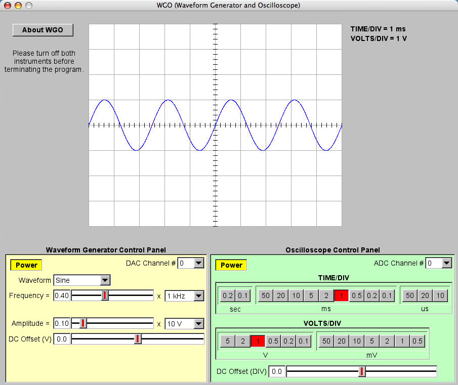
To turn on the waveform generator, click the "Power" button.
To select one of the four DAC channels, select the channel number from the "DAC Channel #" pop-up menu.
To select one of the four waveforms, select the waveform from the "Waveform" pop-up menu. The four available waveforms are sine, square, triangle and sawtooth.
Sine
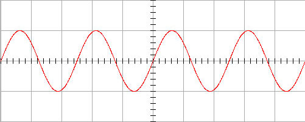
Square
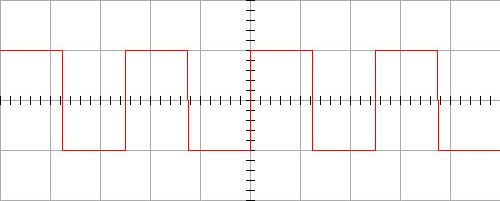
Triangle
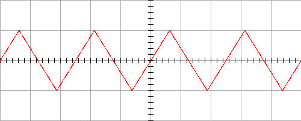
Sawtooth
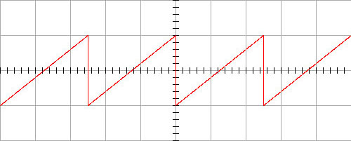
To change the frequency, select the frequency range (100 Hz ~ 100 kHz) and the ratio (0.01 ~ 1).
To change the amplitude, select the voltage range (10 mV ~ 10 V) and the ratio (0.01 ~ 1).
To change the DC offset, slide the "DC Offset (V)" bar (-4 V ~ +4 V).
The signals from the oscilloscope is blue in the monitor.
To turn on the oscilloscope, click the "Power" button.
To select one of the eight ADC channels (0 ~ 7), select the ADC channel number from the "ADC Channel #" menu.
To change the time per division, click one button in the "TIME/DIV" box (10 us ~ 0.2 sec).
To change the voltages per division, click one button in the "VOLTS/DIV" box (0.5 mV ~ 5 V).
To change the DC offset, slide the "DC Offset (DIV)" bar (-10 ~ +10 DIV).
When the output of one DAC channel is connected to the input of one ADC channel, there is a lag of the input signal about 10 us possibly due to leak capacitance. Examples of the lag for different waveforms are displayed bellow.
Sine
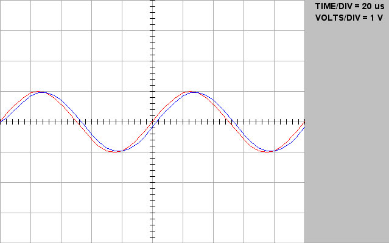
Square
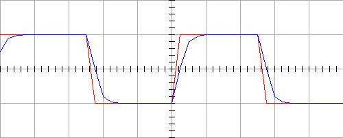
Triangle
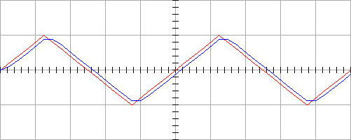
Sawtooth
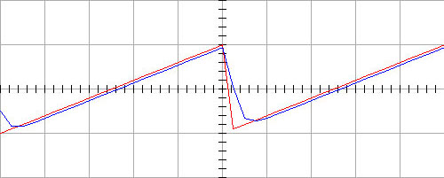
The sampling rate is 200 kHz. Theoretically, the system can generate and record signals at frequencies close to 100 kHz. However, realistically, the system can only handle signals with frequencies less than 20 kHz without severe distortion. The following four figures demonstrate this point with sine waves at 10, 20, 50, and 95 kHz. At 10 kHz, one period of a sine wave is represented by 20 points. The sampling distortion is not obvious. When the frequency of the sine wave increases, the distortion becomes severe and noticeable.
Frequency = 10 kHz, TIME/DIV = 20 us, VOLTS/DIV = 1 V
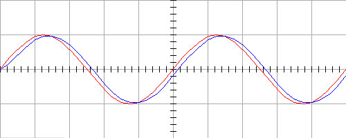
Frequency = 20 kHz, TIME/DIV = 20 us, VOLTS/DIV = 1 V
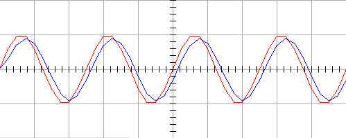
Frequency = 50 kHz, TIME/DIV = 20 us, VOLTS/DIV = 1 V
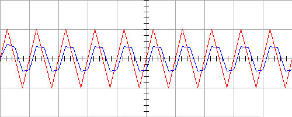
Frequency = 95 kHz, TIME/DIV = 20 us, VOLTS/DIV = 1 V
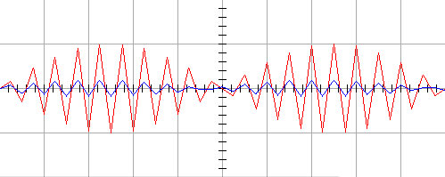
ITC-18 is a nice instrument. When you develop a program for ITC-18, there is one thing you need to keep in mind. It takes ITC-18 two cycles to transfer data from the computer to the DAC output and it takes four cycles to receive data from the ADC input to the computer. That means it takes six cycles to send a command to the DAC output and receive the response to that command. If the sampling rate is fast enough, the latency could be ignored. For example, when the sampling rate is 200 kHz, the six sampling cycle only takes 30 us.